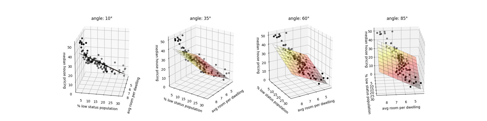

In this example, we try to predict the median price of houses in Boston’s neighbors by looking at two features: the average of the number of rooms per dwelling and the pencentage of low status in the population. The linear regression is done using the Boston Housing Dataset which contains 13 features used to predict the median price of houses. The two features selected are the most efficent on the test set. The 3D representation allows a better understanding of the prediction mechanism with two features.
This example is inspired by linear regression example from scikit-learn documentation.
Script output:
Coefficients:
intercept: 0.66
average room per dwelling: 4.76
percentage of low status in population: -0.63
Mean squared error on test set: 26.45
Variance score on test set: 0.74
Python source code: plot_2d_linear_regression.py
import matplotlib.pyplot as plt
import numpy as np
from tick import linear_model
from sklearn.metrics import mean_squared_error, r2_score
from sklearn.utils import shuffle
from sklearn.datasets import load_boston
from mpl_toolkits.mplot3d import axes3d
from matplotlib import cm
# Load the Boston Housing Dataset
features, label = load_boston(return_X_y=True)
features, label = shuffle(features, label, random_state=0)
# Use two features: the average of the number of rooms per dwelling and
# the pencentage of low status of the population
X = features[:, [5, 12]]
# Split the data into training/testing sets
n_train_data = int(0.8 * X.shape[0])
X_train = X[:n_train_data]
X_test = X[n_train_data:]
y_train = label[:n_train_data]
y_test = label[n_train_data:]
# Create linear regression and fit it on the training set
regr = linear_model.LinearRegression()
regr.fit(X_train, y_train)
# Make predictions using the testing set
y_pred = regr.predict(X_test)
print('Coefficients:')
print(' intercept: {:.2f}'.format(regr.intercept))
print(' average room per dwelling: {:.2f}'.format(regr.weights[0]))
print(' percentage of low status in population: {:.2f}'
.format(regr.weights[1]))
# The mean squared error
print('Mean squared error on test set: {:.2f}'.format(
mean_squared_error(y_test, y_pred)))
# Explained variance score: 1 is perfect prediction
print('Variance score on test set: {:.2f}'.format(r2_score(y_test, y_pred)))
# To work in 3D
# We first generate a mesh grid
resolution = 10
x = X_test[:, 0]
y = X_test[:, 1]
z = y_test
x_surf = np.linspace(min(x), max(x), resolution)
y_surf = np.linspace(min(y), max(y), resolution)
x_surf, y_surf = np.meshgrid(x_surf, y_surf)
# and then predict the label for all values in the grid
z_surf = np.zeros_like(x_surf)
mesh_points = np.vstack((x_surf.ravel(), y_surf.ravel())).T
z_surf.ravel()[:] = regr.predict(mesh_points)
fig = plt.figure(figsize=(20, 5))
# 3D representation under different rotated angles for a better visualazion
xy_angles = [10, 35, 60, 85]
z_angle = 20
for i, angle in enumerate(xy_angles):
n_columns = len(xy_angles)
position = i + 1
ax = fig.add_subplot(1, n_columns, position, projection='3d')
ax.view_init(z_angle, angle)
ax.plot_surface(x_surf, y_surf, z_surf, cmap=cm.hot, rstride=1, cstride=1,
alpha=0.3, linewidth=0.2, edgecolors='black')
ax.scatter(x, y, z)
ax.set_title('angle: {}°'.format(angle))
ax.set_zlabel('median house pricing')
ax.set_xlabel('avg room per dwelling')
ax.set_ylabel('% low status population')
plt.show()
Total running time of the example: 0.07 seconds ( 0 minutes 0.07 seconds)